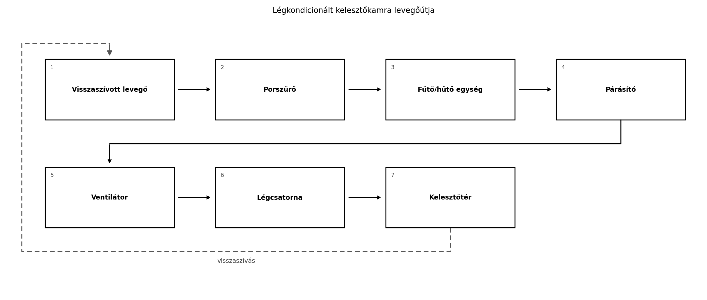

A hajnali pékségben a pék a megformázott kenyereket kelesztőkocsira teszi, és betolja a kelesztőkamrába. Ha a kamra hőmérséklete túl alacsony, a tészta lassan kel, a termék lapos marad, és a héj sütés közben könnyen megreped. Ha a levegő túl száraz, a tészta felülete bőrösödik, megmerevedik, ezért a darab nem tud szépen felnyílni. Ha viszont a kamra túl párás, a felület ragadóssá válik, a szakajtókosarak és a lemezek foltosodnak, és a kamra sarkában penésztelepek jelenhetnek meg. A kelesztőkamra nem egyszerűen egy „meleg szoba”: a hőmérsékletét, páratartalmát és légáramlását úgy kell beállítani, hogy a tészta egyenletesen, hibamentesen keljen. Ebben az alfejezetben a kamrák felépítését, fajtáit, beállítását, mérését és higiéniai kezelését tanuljuk meg.
A légkondicionált kelesztőkamra levegője körbe jár: a visszaszívott levegő először szűrőn, majd fűtő/hűtő egységen és párásítón halad át, ezután a ventilátor a légcsatornán keresztül visszafújja a kelesztőtérbe. A kamra homlokfali vezérlője mutatja a mért és beállított értékeket.

Definíció (kelesztőkamra). A kelesztőkamra olyan szigetelt, zárt vagy ajtóval ellátott tér, amelyben a megformázott tésztadarabokat szabályozott hőmérsékleten, relatív páratartalom mellett, meghatározott ideig kelesztik. A kamra a tészta körüli mikroklímát biztosítja, hogy az élesztő és az enzimek egyenletesen dolgozzanak, és a felület ne száradjon ki.
Kelesztőkamrák alkalmazási területei. Kelesztőkamrát használunk kenyérfélék, péksütemények, finom pékáruk, kelt tésztás termékek kelesztésére, továbbá késleltetett kelesztésnél hűtő-kelesztő kamrában. A kamra mérete a kelesztőkocsik számától függ: kisebb műhelyekben 1–2 kocsis kamrák, nagyobb üzemben 4–8 kocsis vagy alagút rendszerű megoldások is előfordulnak (ellenőrizendő: az üzem technológiai terve). A kamra nem sütőtér; feladata csak a kelesztés, ezért legfontosabb paramétere a levegő hőmérséklete és relatív páratartalma.
Egyszerű kelesztőkamra. Az egyszerű kamra hőszigetelt belső térből áll, amelyet elektromos fűtőtest vagy gőzregiszter melegít, és vízmedencéből, permetező fúvókából vagy kézi párásításból nyeri a nedvességet. A levegőt gyakran természetes áramlás vagy kis ventilátor mozgatja. A hőmérsékletet kapillárcsöves vagy digitális hőmérő mutatja, a páratartalmat higrométer, de automatikus szabályozás nincs, ezért a pék kézzel kapcsolja a fűtést, illetve a párásítót. Az egyszerű kamra olcsó, de a paraméterek erősen ingadozhatnak, ha nem ellenőrzik rendszeresen.
Légkondicionált kelesztőkamra. A légkondicionált kamra zárt légkezelő egységet tartalmaz: fűtő, hűtő, párásító, esetleg párátlanító, ventilátor, szűrő, szabályozó automatika, hőmérséklet- és páratartalom-érzékelő. A kamra a beállított értékeket automatikusan tartja, gyakran programozható: lehet előkelesztés, főkelesztés, melegen tartás vagy hűtve kelesztés. A szabályozó a mért értéket összehasonlítja a célértékkel, és a fűtő, hűtő, párásító teljesítményét állítja. A légkondicionált kamra egyenletesebb terméket ad, de bonyolultabb karbantartást igényel.
A kamra fontosabb részei:
A felsorolt részek térbeli elhelyezkedését az alábbi metszeti rajz mutatja; a Szemléletes kép folyamatábrája ugyanennek a levegőútnak a sorrendjét adta meg. A kelesztőtérből a szaggatott nyilak mentén visszaszívott levegő a mennyezet alatti légkezelő térben a porszűrőn (7), a fűtő/hűtő egységen (4) és a párásítón (5) át a ventilátorhoz (6) jut, amely a hátsó fal légcsatornáján (8) keresztül, a kifúvó réseken át a kocsik közé fújja (folytonos nyilak). Az érzékelők (9, 10) a kelesztőtérben mérnek, a vezérlő (11) a homlokfalon van.
A rajzon az is látszik, miért fontos a karbantartás: a lisztporral eltömődött szűrő (7) csökkenti a légáramot, a kocsik takarásában lévő érzékelő (9, 10) pedig nem a kelesztőtér valódi értékét méri. A szűrő cseréje és a kamra tisztítása csak kikapcsolt, áramtalanított kamránál végezhető (ellenőrizendő: gyártói utasítás). A HTML-kiadásban az alkatrészekre mutatva kiemelődnek, a légáram rétege ki-be kapcsolható.
A kelesztőkamra beállításakor a technológiai lap adja a célértékeket. Tanulási példaként az alábbi értékeket használjuk, de ezeket mindig az üzemi technológiai laphoz kell igazítani (ellenőrizendő: üzemi technológiai lap):
| Termékcsoport | Hőmérséklet (°C) | Relatív páratartalom (%) |
|---|---|---|
| Kenyérfélék | 32–35 | 75–85 |
| Péksütemények | 30–34 | 70–80 |
| Finom pékáruk | 28–32 | 70–75 |
Definíció (relatív páratartalom). A relatív páratartalom azt adja meg, hogy a levegőben aktuálisan jelen lévő vízgőz mennyisége hány százaléka annak a vízgőzmennyiségnek, amelyet az adott hőmérsékletű levegő telítetten meg tudna tartani:
Minél melegebb a levegő, annál több vízgőzt tud telítésig felvenni. Ezért ha a kamrában a hőmérséklet csökken, ugyanakkora vízgőztartalom mellett nő a relatív páratartalom, és a hideg felületeken kondenzvíz csapódhat ki.
Beállítás lépései:
1. példa – A kijelző hőmérséklet-eltérése (korrekció)
A kamra kijelzője 34,8 °C-ot mutat. A hitelesített kézi maghőmérővel a tésztadarab mellé helyezett érzékelő szintjén 33,2 °C-ot mérünk.
2. példa – Higrométer korrekció
A kamra higrométere telített sóoldattal (pl. nátrium-klorid-oldattal) ellenőrizve 72%-ot mutat, miközben a sóoldat hiteles értéke 75% (ellenőrizendő: a gyártói útmutató szerinti sóoldatos hitelesítési érték).
3. példa – Fűtési visszatérési idő
A kamra ajtaját 5 percre kinyitják, a levegő hőmérséklete 35 °C-ról 29 °C-ra esik. A fűtőegység a gyártói adat szerint körülbelül 0,8 °C/perc sebességgel melegíti a kamra levegőjét (tanulási példa; a valóságban a felfűtés nem lineáris).
Előírás. Az élelmiszer-üzemek helyiségeinek tisztíthatónak, fertőtleníthetőnek kell lenniük, és a páralecsapódást, a penészedést, valamint a szennyeződést meg kell előzni (852/2004/EK rendelet – ellenőrizendő: a hatályos II. melléklet vonatkozó pontjai). A kamrában használt tisztító- és fertőtlenítőszereknek élelmiszeripari felhasználásra alkalmasnak kell lenniük, és az anyagbiztonsági adatlap utasításait be kell tartani.
HACCP. A kelesztőkamra hőmérséklete és páratartalma önmagában ritkán CCP, inkább a jó gyártási gyakorlat (GMP) része, mert a kelesztés alatt a tészta még nyers, és a sütés hőkezelést jelent. Kockázatot jelent viszont a felületeken megtelepedő penész, a kondenzvízből lecsepegő szennyeződés, valamint a szűrőből kiáramló por. Ezért a kamra tisztítását, a szűrőcserét és a kondenzvíz-elvezetés működését meghatározott gyakorisággal ellenőrizni kell (ellenőrizendő: a pékség HACCP-terve). Az ellenőrzés jegyzőkönyvben vagy naplóban rögzítendő.
Cél. A kelesztőkamra hőmérsékletének és relatív páratartalmának biztonságos beállítása, a mért értékek ellenőrzése, a kamra napi és heti higiéniai karbantartása.
Eszközök és anyagok. Hitelesített kézi hőmérő (pl. maghőmérő), hitelesített higrométer vagy pszichrométer, fertőtlenített felületi hőmérő érzékelő, technológiai lap, kelesztési napló, élelmiszeripari tisztítószer és fertőtlenítőszer, tiszta törlőkendő, gumikesztyű, védőszemüveg (vegyszeres tisztításhoz).
Higiénia. A kamra kezelése előtt mossunk kezet, viseljünk tiszta munkaruhát és hajhálót. A kamrába csak tiszta kelesztőkocsit, lemezt és szakajtót helyezzünk. A tésztadarabokat lehetőleg letakarva vagy zárt szakajtóban helyezzük a kamrába, hogy a felületi szennyeződést csökkentsük. A kamra padlóján ne tároljunk liszteszsákot vagy idegen anyagot.
Gépbiztonság. A kamra tisztítása, a szűrőcsere vagy az érzékelők kézi ellenőrzése előtt a kamrát a vezérlőn állítsd le, a főkapcsolóval áramtalanítsd, és biztosítsd újraindítás ellen (pl. lakat, tábla; ellenőrizendő: üzemi utasítás). A vezérlő kikapcsolása vagy a vészleállító nem leválasztás. A ventilátorhoz csak a lapát teljes megállása után nyúlj. A kamra ajtaját ne támaszzuk ki testtel, mert a forró, párás levegő és a csukódó ajtó balesetet okozhat. Elektromos javítást csak szakember végezhet; a pék a hibát köteles jelezni.
Lépések:
A jól beállított kelesztőkamrában a tészta egyenletesen kel, felülete enyhén rugalmas, nem bőrös, nem ragadós. A megkelt darab ujjal óvatosan megnyomva lassan, de visszaáll. A termék sütés után jó térfogatú, a héj nem repedezett, a bélzet pórusai egyenletesek. Ha a kamra hőmérséklete magas, a tészta túl gyorsan kel, a bélzet pórusai durvák, a termék terjed. Ha a páratartalom alacsony, a tészta felülete bőrös, száraz hártyát kap, a sütés közbeni nyílás (kemencerugás) gyenge. Ha a páratartalom túl magas, a felület nyúlós, a termék alakja szétfolyik, a szakajtó belseje vizes.
Hiba – A kamra hőmérséklete megfelelő, de a termék
felülete bőrös.
Ok: a relatív páratartalom alacsony, a párásító
víztartálya üres, a szűrő eltömődött, vagy a ventilátor közvetlenül a
tésztára fúj.
Javítás: ellenőrizzük a higrométert, töltsük fel a
vizet, tisztítsuk a szűrőt, irányítsuk el a légáramot a tésztától. A
párásítót növeljük, amíg a higrométer a célértékre nem áll.
Hiba – A kamra alján víz áll, a sarkok
penészesek.
Ok: a kondenzvíz-elvezető eldugult, a kamra túl párás,
a takarítás nem elég gyakori.
Javítás: tisztítsuk ki a lefolyót, csökkentsük a
párásítást, naponta szárítsuk fel a vizet, hetente fertőtlenítsünk. A
penészes felületet penészölő szerrel kezeljük, majd alaposan
öblítsünk.
Hiba – A vezérlő szerint a kamra 35 °C, a kézi hőmérő 31
°C-ot mutat.
Ok: az érzékelő rossz helyen van (ajtó mellett,
huzatban), az érzékelő meghibásodott, vagy a kamra légáramlása
egyenetlen.
Javítás: ellenőrizzük az érzékelő elhelyezését,
hasonlítsuk össze több ponton hiteles műszerrel, és ha az eltérés
tartós, hívjunk karbantartót. A beállítást az érzékelő cseréjéig a kézi
méréshez igazítsuk.
A megoldások a Megoldások szakasz elején találhatók.
1. feladat (A). Sorold fel a légkondicionált kelesztőkamra főbb részeit, és mondd meg, mi a szerepük a hőmérséklet és páratartalom tartásában.
2. feladat (A). A kamra kijelzője 33,0 °C-ot, a hiteles kézi hőmérő 33,6 °C-ot mutat. Számítsd ki a kijelző eltérését (korrekcióját). A megengedett tűrés ±2 °C. Megfelel-e a kamra?
3. feladat (B). A párásító víztartálya 5 liter vizet tartalmaz. A párásító óránként 1,2 litert párologtat. Hány órára elegendő a víz, ha a kamra folyamatosan üzemel?
4. feladat (B). Egy kelesztőkamra levegője 30 °C-on 70% relatív páratartalmú. A pék a cél 80% eléréséhez növeli a párásítást. Magyarázd el, miért nem növelheti a relatív páratartalmat a hőmérséklet emelésével, és miért kell párásítani! (Számítás nem szükséges, indoklás kell.)
5. feladat (C). A kamrában a tészta egyik sarkában bőrös, a másik sarkában ragadós. Milyen légáramlási és páratartalom-egyenetlenségre gyanakszol? Hogyan ellenőriznéd, és mit állítanál be?
6. feladat (D). Tegyük fel, hogy a kelesztési napló szerint a kamra hőmérséklete reggel 6:00-kor 36 °C, 6:30-kor 33 °C, 7:00-kor 34 °C, 7:30-kor 35 °C volt. Számítsd ki az átlagos hőmérsékletet, és állapítsd meg, hogy az érték a 32–35 °C-os célzónában maradt-e (tanulási példa, kenyérfélék, vö. a fenti táblázat). Mit tegyél, ha a középső mérésnél az ajtót hosszan nyitva hagyták? (Válaszolj a számítással és rövid hibamegelőzéssel.)
1. feladat (A). A légkondicionált kamra részei: hőszigetelt köpeny ajtóval, fűtő/hűtő egység, párásító, ventilátor és légcsatorna, porszűrő, vezérlő automatika, hőmérséklet- és páratartalom-érzékelő. A fűtő a hőmérsékletet emeli, a párásító a vízgőzt adagolja, a ventilátor keringteti a levegőt, a szűrő a port fogja meg, a szabályozó az érzékelők jele alapján tartja a beállított értékeket.
2. feladat (A).
Adott:
,
.
Keresett:
.
Képlet:
.
Behelyettesítés:
,
ami azt jelenti, hogy a kijelző 0,6 °C-kal kevesebbet mutat. A valódi
hőmérséklet a hiteles műszer szerint 33,6 °C.
Az eltérés abszolút értéke 0,6 °C, ami kisebb, mint 2 °C, tehát a
kijelző megfelel a tűrésnek. ∎
3. feladat (B).
Adott:
,
párologtatási sebesség
.
Keresett: üzemidő
.
Képlet:
.
Behelyettesítés:
.
Eredmény: körülbelül 4 óra 10 percre elegendő a víz.
Ellenőrzés: 4,17 h × 1,2 l/h = 5 l, visszaszámolva stimmel. ∎
4. feladat (B). A relatív páratartalom a levegőben lévő vízgőz tömegének és az adott hőmérsékleten lehetséges maximális (telítési) vízgőz tömegnek a hányadosa. Ha a hőmérséklet nő, a telítési vízgőz mennyiség is nő, ezért azonos vízgőztartalom mellett a relatív páratartalom csökken. Tehát a páratartalom növeléséhez vizet kell párologtatni, a hőmérséklet emelése önmagában nem növeli, sőt csökkenti a relatív páratartalmat.
5. feladat (C). A bőrös sarok valószínűleg a légcsatorna közvetlen befúvása alatt van, ahol a levegő gyorsan mozog és kiszárítja a felületet, míg a ragadós sarok lehet egy holt zóna, ahol a légáramlás gyenge, a pára lecsapódik, és a felület nem szárad. Ellenőrzés: hőmérőt és higrométert több ponton kell elhelyezni, és meg kell mérni az értékeket. A beállítás: a légcsatorna terelőlemezeit úgy állítani, hogy a levegő ne fújjon közvetlenül a tésztára, a párásítót egyenletesebbé tenni, vagy a kocsi elrendezést módosítani.
6. feladat (D).
Adott négy mérés: 36 °C, 33 °C, 34 °C, 35 °C.
Átlag:
.
Az átlag a célzónán belül van, de a 6:00-kor mért 36 °C a 32–35 °C-os
célzóna fölött van (túlkelesztés veszélye), a 6:30-as 33 °C a zónán
belül. A 6:00-s túllövés okát (szabályozó, érzékelő) is vizsgálni kell.
A 6:30-as 33 °C leesés arra utalhat, hogy az ajtót hosszan nyitva
hagyták, vagy a fűtés rövid időre leállt. Megelőzés: a kamra ajtaját
csak a szükséges ideig szabad nyitni, és az ajtónyitást a kelesztési
naplóban jelölni kell. Ha a hőmérséklet többször is leesik, a kamra
fűtőteljesítményét vagy az ajtótömítést ellenőriztetni kell. ∎
A kelesztőkamra a megformázott tésztadarabok szabályozott kelesztésére szolgál. Az egyszerű kamra kézi fűtéssel és párásítással működik, a légkondicionált kamra fűtő/hűtő egységet, párásítót, ventilátort, szűrőt és szabályozó automatikát tartalmaz. A legfontosabb paraméterek a hőmérséklet és a relatív páratartalom, amelyet a technológiai lap ad meg (tanulási példa: kenyérféléknél 32–35 °C, 75–85% relatív páratartalom). A relatív páratartalom a levegő vízgőztartalmának viszonya a telítési értékhez. A kamra beállításakor az üres kamrát először fel kell fűteni és stabilizálni, majd a kézi hiteles hőmérővel és higrométerrel ellenőrizni kell a vezérlőt. Az érzékelőket a tészta magasságában, légáramlástól nem takarva kell elhelyezni. A kamra tisztítása során a kondenzvizet, a szűrőt és a penészedést naponta, illetve hetente ellenőrizni kell; a penészt nedvesen kell eltávolítani és fertőtleníteni. A méréseket és a tisztítást dokumentálni kell.
Továbbvitt eredmény. A kelesztőkamra hőmérséklet- és páratartalom-szabályozásának, a légáramlás és a kondenzvíz kezelésének fogalmait és módszereit közvetlenül alkalmazzuk a Hűtő-kelesztő berendezések és gépi kelesztők alfejezetben, ahol a kamrát hűtéssel, programozott kelesztéssel és automatikus üzemmódokkal bővítjük.
A kelesztőkamrákra vonatkozó részletes gépkövetelményeket, a beépített érzékelők pontossági osztályait, a gyártói karbantartási utasításokat és a tisztítószerek engedélyezési adatait a kiadás előtt ellenőrizni kell a berendezés gyártói dokumentációjában, az élelmiszer-higiéniai rendelet (852/2004/EK) hatályos mellékleteiben, valamint az üzem HACCP-tervében. Az alfejezetben használt hőmérséklet-, páratartalom- és fűtési sebesség értékek tanulási példák; a konkrét termékhez és berendezéshez tartozó értékeket az üzemi technológiai lap és a gyártói adatlap határozza meg. A higrométer sóoldatos hitelesítési értékeit a műszer gyártói útmutatója szerint kell ellenőrizni.